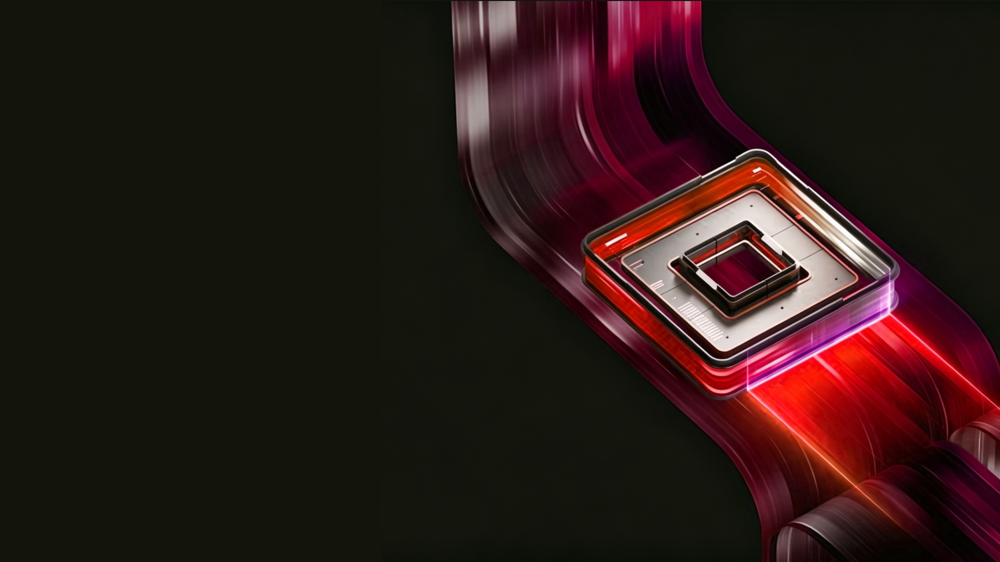

Page Routing System
信息密度决定灰底页面，图像构图决定黑底页面
不是把所有页面排进一条“字多字少”的尺子里，而是先判断这页属于哪一种阅读场景。
MAP先选篇章，再选页面形态
第一步：判断读者主要在“读分析”，还是在“看方案”。灰底解决信息如何被读清楚；黑底解决图像、界面或路径如何成为叙事主角。
标准分析
中低密度：1 判断 + 1 组证据结构化分析
中高密度：1 判断 + 3 信号 + 4 动作查阅型页面
高密度：多维对照，必须结构化灰底也可用 A1--A3 分析视觉页：图是证据材料，用来得出分析结论；它们不改变 D1--D4。
证据图解读
大图 + 1 判断 + 2--3 标注对照图分析
2--3 材料并置 + 差异结论关系图分析
1 张关系图 + 结构化解读若页面意图是呈现方案感受或设计主张，而不只是分析材料，请进入下一页的黑底 B 系列。
Page Routing System · Design
黑底设计篇不按密度分级，而是由主视觉决定
当页面的任务是呈现设计主张、方案感受或未来体验时，图像先于分析文字。
MAP B黑底 · 图像主导构图
判断问题：这张图是在作为分析证据，还是在带领设计叙事？前者使用灰底 A 系列；后者才使用黑底 B 系列。两者都有图，但阅读目的不同。
大图 + 结论
主视觉：一张图 + 一句主张界面 + 标注
主视觉：截图 + 2--3 条注释流程图 + 编号
主视觉：路径图 + 节点解释Density Preview · D1
默认叙事页仍以一个大结论为核心
内容少时，不因空白缩小文字；用少量证据卡支撑结论。
D1默认 · 低密度叙事
规则：先放大核心结论，再放 2--3 个支撑点
让新手在第一次使用时，不必先理解全部系统，也能完成一个可验证的任务。
正文保持默认可读字号。卡片只承载证据、原因或目标，不和上方结论竞争。
先看见入口
按任务组织起点，而不是先要求理解产品结构。
再完成验证
用可运行示例让用户确认路径是否正确。
最后形成信心
把一次成功沉淀为下一步行动的依据。
Density Preview · D2
标准分析页：一个判断，加一组可扫读的证据
比 D1 多出必要的背景与数据，但仍围绕单一判断展开。
D2默认 · 中低密度分析
规则：主判断不退场；用一张图或一组量化证据解释“为什么”
体验效率的主要损耗，集中在从理解任务到验证结果之间的反复切换。
这类页面需要比 D1 多一点证据，但不必把每个问题、责任或动作都拆成独立模块。
DEVELOPER INTERVIEW · N=24
任务完成时最常见的停顿
TOP FRICTIONS找正确入口
82%
确认环境条件
68%
判断结果是否正确
61%
结论：先把入口、环境和结果串成一条连续路径，比单独补充更多说明更有效。
Density Preview · D3
信息变多时，先把证据收束成可扫描的结构
适用于一页需要同时讲清问题、证据、判断与动作的分析页。
D3结构化 · 中高密度
规则：正文不缩小；用分组、固定层级和短条目提高可读密度
将零散问题收束为“找到 → 验证 → 复用”的连续体验链DESIGN FOCUS
找到：按任务给正确起点
让用户先进入与当前目标匹配的路径，而不是先学习目录结构。
- 任务词直达可执行页面
- 版本与前置条件同时露出
验证：给一个可运行的最小闭环
每个核心入口都配可验证结果，减少“我到底做对没有”的等待。
- 示例代码可直接运行
- 结果、日志与下一步相连
定位：把报错转为可理解线索
不只返回错误码，还展示最可能的原因、影响和建议动作。
- 从日志定位到配置位置
- 先给高频且可修复的原因
复用：将一次成功沉淀为模板
让跑通的配置、命令和关键参数成为下次任务的起点。
- 保存可分享的最小配置
- 按场景推荐相邻任务
Density Preview · D4
只有需要查阅时，才把信息收进高密度参考页
用户明确需要在一页内比对细节时使用；它不是普通叙事页的默认形态。
D4查阅型 · 用户明确要求
规则：允许更密，但必须有清晰索引、分组和一致的表格结构
任务链路与设计响应
| 环节 | 用户判断 | 当前阻断 | 设计响应 |
|---|---|---|---|
| 找到入口 | 我从哪里开始？ | 任务词无法映射产品路径 | 任务导航 + 版本前置条件 |
| 准备环境 | 依赖是否齐全？ | 版本、权限、组件分散 | 环境检查 + 一键修复建议 |
| 编写代码 | 最小范例是什么？ | 代码片段缺少上下文 | 可运行示例 + 参数解释 |
| 排查问题 | 错误意味着什么？ | 日志难以对应配置与代码 | 错误定位 + 高概率原因 |
| 沉淀复用 | 下次如何更快？ | 成功路径没有被保存 | 模板、收藏与分享入口 |
使用边界
适合：评审、附录、方案对照、多人查阅
读者需要横向比较多个维度或回看具体责任、依赖、指标。
不适合：核心结论、章节开场、方案主张
这些页面应回到 D1/D2，以大字和更少的支撑信息建立叙事。
优先：矩阵、旅程、画像、推导流等专属模板
高密度不是自由堆字，而是选能承载该信息关系的结构。
允许：用户明确要求在一页保留完整信息
此时控制在固定格、固定行数和可读字号内；必要时补附录页。
Analysis Visual · A1
灰底也能以大图为主，但图必须提供分析证据
适合一张关键界面、现场照片或研究材料，加判断与短标注。
A1灰底分析 · 证据图解读
结构：一张证据图 + 一个判断 + 2--3 条可定位的观察

Analysis Visual · A2
把材料并置，才能让差异本身成为结论
适合竞品、版本、用户路径或方案前后状态的对照分析。
A2灰底分析 · 对照图分析
结构：2--3 张可比较的材料 + 关键差异 + 明确分析结论
工具路径功能分层清楚，但任务起点不聚焦。

诊断路径从性能现象可更快进入可行动线索。
Analysis Visual · A3
关系图占主面积时，也要旁证一个可以行动的判断
适合生态图、任务链路、用户旅程或服务关系的分析解读。
A3灰底分析 · 关系图分析
结构：一张关系图 / 路径图 + 结构化解读，而不是用卡片替代关系本身
理解任务
用户先判断自己当前要完成什么。
完成验证
用户需要获得可确认的结果反馈。
沉淀复用
成功经验应成为下一次任务起点。
Image-led · B1
黑底设计页：先让一张图承担体验感受
不按 D 分级；适合愿景、设计原则或一个需要被“感受到”的关键时刻。
B1图像主导 · 大图 + 结论
构图：图是最大主体，文字只给一个有力量的主张

DESIGN PRINCIPLE 01
让每一次操作，都看得见下一步。
先让用户建立方向感，再把复杂能力在恰当时机逐步交给他们。
Image-led · B2
黑底设计页：用界面截图讲清一个设计点
适合方案展示、关键界面或局部功能解释。
B2图像主导 · 界面 + 标注
构图：界面占主要面积；标注只解释观者需要注意的 2--3 件事
Image-led · B3
黑底设计页：把复杂方案变成一张可读的图
适合关键路径、服务流程或一个设计机制的解释。
B3图像主导 · 流程 + 编号
构图：流程图是主视觉；文字只做节点解释，不转为灰底分析页
EXPERIENCE LOOP
把“找到答案”的过程，变成连续反馈。
这类页面的信息关系并不简单，但读者先读取的是路径图，而不是段落和卡片。
1
找到任务入口
从任务词进入正确的最小路径。
2
完成一次验证
通过可运行结果确认方向无误。
3
保存成功经验
把关键配置带入下一次任务。